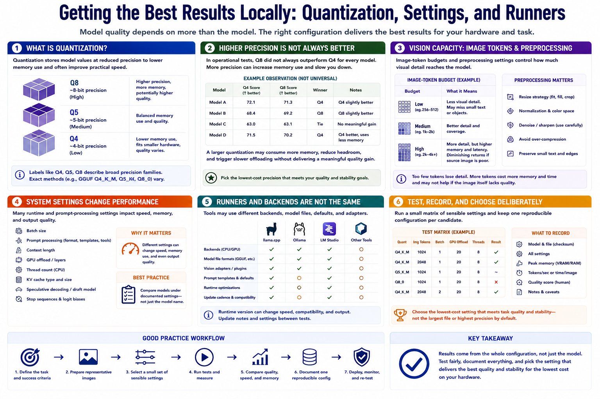

Quantization and Runtime Settings
Connecting to LMS... Progress: in progress

Narration
Quantization stores model values at reduced precision to lower memory use and often improve practical speed. Labels such as Q4, Q5, and Q8 describe broad precision families, though exact methods vary. Lower precision fits smaller hardware but can affect output quality differently across models.
Higher precision is not automatically better in an operational test. The referenced benchmark observed that Q8 did not always outperform Q4 for every model. A larger quantization may consume more memory, reduce headroom, and trigger slower offloading without delivering a meaningful quality gain.
Image-token budgets and preprocessing settings affect how much visual detail reaches the model. Too little visual capacity may lose small text or objects. More tokens increase memory and latency and may not help if the source image is poor.
Batch size, prompt-processing settings, context length, GPU offload, thread count, and cache choices also change performance. Compare models under documented settings rather than treating the model name as the whole configuration.
Local runners such as llama.cpp, Ollama, LM Studio, and other tools may use different backends, model files, prompt templates, defaults, and vision adapters. Runtime version can alter speed, compatibility, and output.
Test a small matrix of sensible settings, record memory and completion, and keep one reproducible configuration per candidate. Choose the lowest-cost setting that meets task quality and stability rather than assuming the largest file is safest.